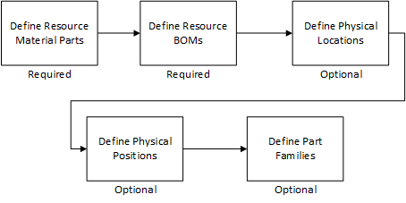

零件定义
零件是通常用于资源或设备的物理对象。 零件可以存储在库存中，用于设备并然后返回库存。 多个零件可以共享资源物料零件，并且具有相同的维护特性。
可在创建零件之前使用零件建模对象来定义、更新和追踪制造资源物料零件。 要确保所有零件都具有一组共同特性，必须向每个零件指派至少一个资源物料零件。 这种强制关联有助于确保有效的零件替代，并按类型或资源物料零件追踪各个零件。
零件使用“零件创建”车间页创建，并且可以在“零件设置”、“零件维护”等零件的车间页中进一步维护。 有关信息，请参见《Opcenter Execution Medical Device and Diagnostics Shop Floor 指南》或《Opcenter Execution Core Shop Floor 指南》。
要从菜单栏访问零件车间页，浏览至资源>零件或资源>零件服务。
| 注释: | 本章中的资源物料零件是指用于产品的非资源物料零件的物料零件。 |
此图显示零件的建模流程。

这些主题提供有关“零件定义”的信息：
| • | 定义零件 |
| • | 定义零件系列 |
| • | 定义资源物料零件 |
| • | 定义资源物料清单 |
| • | 定义实际地点 |
| • | 定义实际位置 |